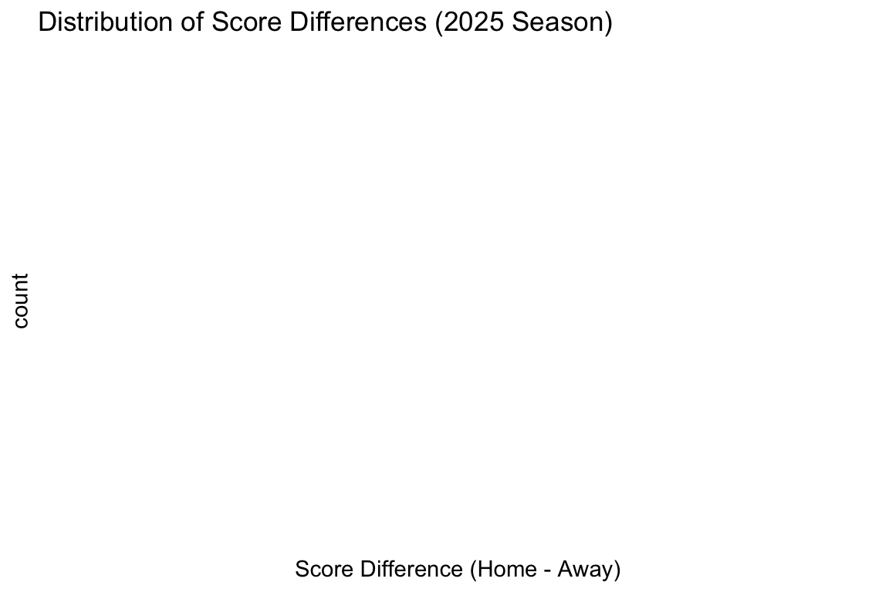
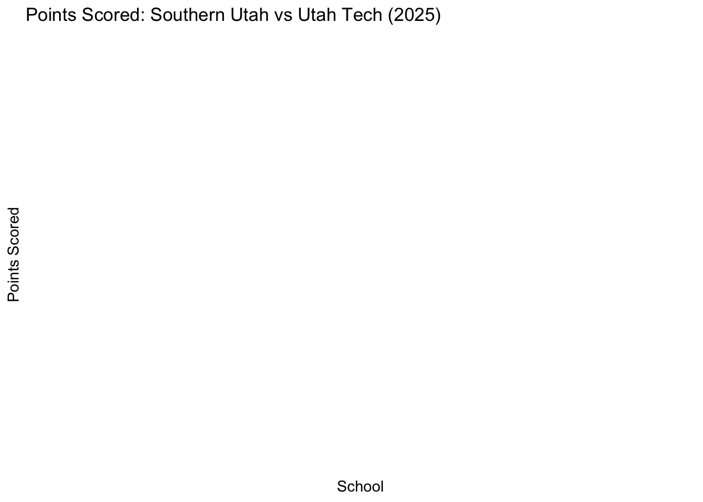
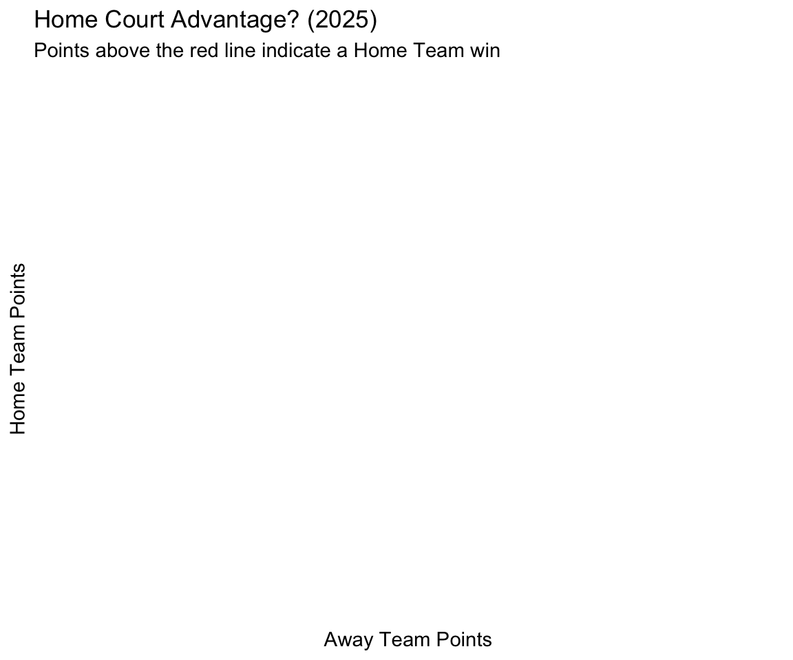

library(ggplot2)
gghist <- function(x, bins = 30, title = NULL, xlab = NULL) {
if (!is.numeric(x)) stop("x must be numeric")
ggplot(data.frame(x = x), aes(x = x)) +
geom_histogram(bins = bins) +
labs(title = title, x = xlab %||% "x", y = "count") +
theme_minimal()
}
`%||%` <- function(a, b) if (!is.null(a)) a else bMATH 3190 Homework 1
Due January 29, 2026
Focus: Notes 1-3
Total Points: 90 + 10 (Self-Critique Comment and Uploading to GitHub) = 100
Note that your homework should be completed in Quarto. You can just add your answers and code to this document in the appropriate part. The file should be rendered as an html document or pdf document (html is quicker to render and you will need an installation of LaTeX to render as a pdf). You will “turn in” this homework by uploading the files, the .qmd and output file, to your GitHub Math_3190_Assignment repository in the Homework/Homework_1 directory. Make sure all supporting files (if there are any) are in this directory as well. You should use git and Unix commands in a terminal for this (i.e. don’t manually upload files to GitHub). In addition, you will submit just your html or pdf file on Canvas to unlock the solutions.
Don’t forget to also put a self-critique comment on Canvas indicating what you did correctly and incorrectly and include any questions you may have about the assignment after submitting the assignment and thoroughly looking through the solutions.
Problem 1 (18 points)
In two different code chunks, write two functions called gghist and ggbox. The first code chunk is already given below, but you’ll need to add the second one. The gghist function should create a ggplot histogram of a variable that is given as a vector. The ggbox function should create a ggplot box plot when a single numeric vector is given or it should create side-by-side box plots if one numeric and one categorical variables are given. You can check if a vector is numeric with the is.numeric() function. Allow the user to indicate whether it should be horizontal or vertical box plots. Make sure you set echo and eval both to true for these code chunks. Also make sure to label the code chunks.
ggbox <- function(cat, val, horizontal = FALSE, title = NULL, xlab = NULL, ylab = NULL) {
df <- data.frame(cat = as.factor(cat), val = val)
p <- ggplot(df, aes(x = cat, y = val)) + geom_boxplot() + labs(title = title, x = xlab %||% "group", y = ylab %||% "value") + theme_minimal()
if (horizontal) p <- p + coord_flip()
p
}Problem 2 (57 points)
Part a (6 points)
Learn about the built-in read.fwf() R function for use in downloading data from a URL into R. The widths and strip.white options will be especially useful here. Use this function to download the scores for all college basketball games for the 2024-2025 season http://kenpom.com/cbbga26.txt and then convert it to a tibble (load the tidyverse package first). The second team listed per line is the home team. It is not clear what the numbers, letters, or city names indicate after the second listed score. Notice that this is a “live” file that gets updated every day! So, your tibble size may change if you work on this assignment over the course of several days. That’s fine. Give the code you used to download these data in a labeled code chunk.
library(tidyverse)
url <- "http://kenpom.com/cbbga26.txt"
guess_widths <- c(10, 40, 6, 40, 6, 30)
cbbga <- as_tibble(read.fwf(url, widths = guess_widths, strip.white = TRUE, comment.char = ""))
head(cbbga)# A tibble: 6 × 6
V1 V2 V3 V4 V5 V6
<chr> <chr> <chr> <chr> <lgl> <lgl>
1 11/03/2025 McMurry 55 Abilene Chri "stian" 92 NA NA
2 11/03/2025 James Madison 71 Akron "" 85 NA NA
3 11/03/2025 North Dakota 62 Alabama "" 91 NA NA
4 11/03/2025 Blue Mountain 60 Alabama A&M "" 80 NA NA
5 11/03/2025 Florida 87 Arizona "" 93 N … NA NA
6 11/03/2025 Southern 77 Arkansas "" 109 NA NA #| label: step_by_step_wrangling
cbbga2 <- cbbga %>%
rename(date = V1, away = V2, away_pts = V3, home = V4, home_pts = V5, note = V6)
head(cbbga2) # A tibble: 6 × 6
date away away_pts home home_pts note
<chr> <chr> <chr> <chr> <lgl> <lgl>
1 11/03/2025 McMurry 55 Abilene C… "stian" 92 NA NA
2 11/03/2025 James Madison 71 Akron "" 85 NA NA
3 11/03/2025 North Dakota 62 Alabama "" 91 NA NA
4 11/03/2025 Blue Mountain 60 Alabama A… "" 80 NA NA
5 11/03/2025 Florida 87 Arizona "" 93 N… NA NA
6 11/03/2025 Southern 77 Arkansas "" 109 NA NA cbbga3 <- cbbga2 %>%
mutate(
away_pts = as.numeric(away_pts),
home_pts = as.numeric(home_pts),
score_diff = home_pts - away_pts
)Warning: There was 1 warning in `mutate()`.
ℹ In argument: `away_pts = as.numeric(away_pts)`.
Caused by warning:
! NAs introduced by coercionhead(cbbga3)# A tibble: 6 × 7
date away away_pts home home_pts note score_diff
<chr> <chr> <dbl> <chr> <dbl> <lgl> <dbl>
1 11/03/2025 McMurry 5… NA 92 NA NA NA
2 11/03/2025 James Madison 7… NA 85 NA NA NA
3 11/03/2025 North Dakota 6… NA 91 NA NA NA
4 11/03/2025 Blue Mountain 6… NA 80 NA NA NA
5 11/03/2025 Florida 8… NA 93 N… NA NA NA
6 11/03/2025 Southern 7… NA 109 NA NA NAcbbga4 <- cbbga3 %>%
arrange(home)
head(cbbga4)# A tibble: 6 × 7
date away away_pts home home_pts note score_diff
<chr> <chr> <dbl> <chr> <dbl> <lgl> <dbl>
1 11/03/2025 Thomas ME 4… NA 100 NA NA NA
2 11/03/2025 Oklahoma Christian 5… NA 100 NA NA NA
3 11/05/2025 Southern 8… NA 100 NA NA NA
4 11/05/2025 Milligan 5… NA 100 NA NA NA
5 11/09/2025 East Texas A&M 7… NA 100 NA NA NA
6 11/12/2025 Coppin St. 5… NA 100 NA NA NAcbbga5 <- cbbga4 %>%
select(!note)
head(cbbga5)# A tibble: 6 × 6
date away away_pts home home_pts score_diff
<chr> <chr> <dbl> <chr> <dbl> <dbl>
1 11/03/2025 Thomas ME 48 Ston… NA 100 NA NA
2 11/03/2025 Oklahoma Christian 57 Tulsa NA 100 NA NA
3 11/05/2025 Southern 82 Marq… NA 100 NA NA
4 11/05/2025 Milligan 51 Midd… NA 100 NA NA
5 11/09/2025 East Texas A&M 74 Hawa… NA 100 NA NA
6 11/12/2025 Coppin St. 50 Sout… NA 100 NA NA#| label: pipe_and_filter
cbbga_clean <- as_tibble(read.fwf(url, widths = guess_widths, strip.white = TRUE)) %>%
rename(date = V1, away = V2, away_pts = V3, home = V4, home_pts = V5, note = V6) %>%
mutate(
away_pts = as.numeric(away_pts),
home_pts = as.numeric(home_pts),
score_diff = home_pts - away_pts,
year = as.numeric(str_sub(date, 7, 10))
) %>%
arrange(home) %>%
select(!note)Warning: There was 1 warning in `mutate()`.
ℹ In argument: `away_pts = as.numeric(away_pts)`.
Caused by warning:
! NAs introduced by coercioncbbga25 <- cbbga_clean %>%
filter(year == 2025)
head(cbbga25)# A tibble: 6 × 7
date away away_pts home home_pts score_diff year
<chr> <chr> <dbl> <chr> <dbl> <dbl> <dbl>
1 11/03/2025 Thomas ME 4… NA 100 NA NA 2025
2 11/03/2025 Oklahoma Christian 5… NA 100 NA NA 2025
3 11/05/2025 Southern 8… NA 100 NA NA 2025
4 11/05/2025 Milligan 5… NA 100 NA NA 2025
5 11/09/2025 East Texas A&M 7… NA 100 NA NA 2025
6 11/12/2025 Coppin St. 5… NA 100 NA NA 2025#| label: suu_analysis
games_by_team <- function(d, team_name) {
d %>%
filter(
str_detect(home, fixed(team_name, ignore_case = TRUE)) |
str_detect(away, fixed(team_name, ignore_case = TRUE))
)
}
suu_games <- games_by_team(cbbga25, "SUU")
print(suu_games)# A tibble: 0 × 7
# ℹ 7 variables: date <chr>, away <chr>, away_pts <dbl>, home <chr>,
# home_pts <dbl>, score_diff <dbl>, year <dbl>suu_record <- suu_games %>%
mutate(result = case_when(
(home == "SUU" & home_pts > away_pts) |
(away == "SUU" & away_pts > home_pts) ~ "W",
(home == "SUU" & home_pts < away_pts) |
(away == "SUU" & away_pts < home_pts) ~ "L",
TRUE ~ NA_character_
)) %>%
summarize(
team = "SUU",
wins = sum(result == "W", na.rm = TRUE),
losses = sum(result == "L", na.rm = TRUE),
games = n(),
win_pct = ifelse(games > 0, wins / games, 0)
)
suu_record# A tibble: 1 × 5
team wins losses games win_pct
<chr> <int> <int> <int> <dbl>
1 SUU 0 0 0 0#| label: team_standings_loop
get_team_record <- function(df, team_name) {
games <- df %>%
filter(home == team_name | away == team_name)
games %>%
mutate(result = case_when(
(home == team_name & home_pts > away_pts) |
(away == team_name & away_pts > home_pts) ~ "W",
(home == team_name & home_pts < away_pts) |
(away == team_name & away_pts < home_pts) ~ "L",
TRUE ~ NA_character_
)) %>%
summarize(
team = team_name,
wins = sum(result == "W", na.rm = TRUE),
losses = sum(result == "L", na.rm = TRUE),
games = n(),
win_pct = ifelse(games > 0, wins / games, 0)
)
}
all_teams <- unique(c(cbbga25$home, cbbga25$away))
team_standings <- tibble(
team = character(),
wins = numeric(),
losses = numeric(),
games = numeric(),
win_pct = numeric()
)
for (t in all_teams) {
if (!is.na(t) && t != "") {
rec <- get_team_record(cbbga25, t)
team_standings <- team_standings %>% add_row(rec)
}
}
team_standings <- team_standings %>%
arrange(desc(win_pct), team)
head(team_standings, 10)# A tibble: 10 × 5
team wins losses games win_pct
<chr> <dbl> <dbl> <dbl> <dbl>
1 100 0 0 25 0
2 100 1 0 0 1 0
3 100 N Lahaina, HI 0 0 1 0
4 101 0 0 37 0
5 101 1 0 0 1 0
6 101 1N Uncasville, CT 0 0 1 0
7 101 N Las Vegas, NV 0 0 1 0
8 102 0 0 31 0
9 102 1 0 0 1 0
10 102 N Lahaina, HI 0 0 1 0gghist(
cbbga25$score_diff,
bins = 20,
title = "Distribution of Score Differences (2025 Season)",
xlab = "Score Difference (Home - Away)"
)Warning: Removed 2746 rows containing non-finite outside the scale range
(`stat_bin()`).
rivals_long <- cbbga25 %>%
filter(
home %in% c("Southern Utah", "Utah Tech") |
away %in% c("Southern Utah", "Utah Tech")
) %>%
pivot_longer(
cols = c(home, away),
names_to = "side",
values_to = "school"
) %>%
filter(school %in% c("Southern Utah", "Utah Tech")) %>%
mutate(points = if_else(side == "home", home_pts, away_pts))
ggbox(
cat = rivals_long$school,
val = rivals_long$points,
horizontal = FALSE,
title = "Points Scored: Southern Utah vs Utah Tech (2025)",
xlab = "School",
ylab = "Points Scored"
)
ggplot(cbbga25, aes(x = away_pts, y = home_pts)) +
geom_point(alpha = 0.3, color = "darkblue") +
geom_abline(intercept = 0, slope = 1, linetype = "dashed", color = "red") +
labs(
title = "Home Court Advantage? (2025)",
subtitle = "Points above the red line indicate a Home Team win",
x = "Away Team Points",
y = "Home Team Points"
) +
theme_minimal()Warning: Removed 2746 rows containing missing values or values outside the scale range
(`geom_point()`).
Now lets practice using our tidy data/tidyverse tools! Using your cbbga tibble, try doing the following. In each part, save the object as a new tibble (like cbbga2, cbbga3, etc) and in each subsequent part, use the tibble you created in the previous part.
Part b (2 points)
Use rename() to rename all of your variables to names that make sense. Then print the first six rows of the new tibble using the head() function.
Part c (2 points)
Use mutate() to create a new column that gives the score differences (home team score minus away team score). Then print the first six rows of the new tibble using the head() function.
Part d (2 points)
Use arrange() to sort the data set by the home team alphabetically. Then print the first six rows of the new tibble using the head() function.
Part e (2 points)
Use select() to remove the extra variable(s) that had that irrelevant information at the end of each line. Note: you can select every variable except one by using !. Then print the first six rows of the new tibble using the head() function.
Part f (3 points)
Put parts a-e all together in one piping expression (with 5 pipes) and save this as a new object in R.
Part g (3 points)
Use filter() to reduce the data down to only games played in 2025 (you could use the lubridate package for this, since it specializes in dealing with dates, but some base R packages will also work). Save this in a new tibble. We will use this tibble with only the 2025 years from here on out.
Part h (4 points)
Write a function that will filter the tibble to only games played by a given team. Demonstrate your function by displaying games played by SUU in 2025.
Part i (7 points)
Use summarize() to extract SUU’s win/loss record and winning percentage for their 2025 games. Hint: using the case_when() function inside of a mutate() function to create a new variable that indicates whether SUU won or lost is helpful. You can verify on the Internet that SUU had 4 wins and 10 losses in 2025, so if your code retruns those values, you did it correctly.
Part j (7 points)
Generalize this by writing a function that will do this for a given team, and create a tibble with this information for all teams. Arrange this tibble first by winning percentage (descending) and by team (alphabetically) if there are any ties when it comes to winning percentage. A for loop and the add_row() function may be useful here.
Part k (5 points)
With only the 2025 games, use the gghist() you wrote in Problem 1 on the score differences variable you created in part c. Add appropriate labels and a title to your graph. Also, use the #| fig-width:, #| fig-height:, #| out-width:, and #| fig-align: code chunk options to center the figure and then to adjust your figure to a size you like. Play around with different sizes to see what those options adjust.
Part l (9 points)
Filter the tibble with all 2025 games to only include Utah Tech or Southern Utah, then crate a tibble or data frame where each row is a game played by either team that has one column indicating the school, Utah Tech or Southern Utah, and a second column indicating the number of points that team played, regardless of whether the team was home or away. Then use your ggbox() function to create a side-by-side boxplot of number of points scored in all 2025 games for each team.
Note, this is a little challenging. The most straightforward way to do this is to use the pivot_longer() function with cols = the names of the two columns that have the away and the home teams (the names of these columns should not be in quotes, but they should be in a vector c()). Try to do this yourself first, but using AI for some help is fine.
Part m (5 points)
Create one more appropriate graphs for the 2025 basketball data. This graph could be anything you’d like as long as you use ggplot2, it shows something meaningful, and it is not the same as the graphs you made in parts k or l.
Problem 3 (15 points)
Repeat parts b-e and g of Problem 2 using Python in Quarto. First, pass the original object that you read in from the website to Python without any changes to it (you do not need to read the file from the web in Python, but you can if you’d like) and then use pandas (or polars if you’d like) to rename the columns as indicated in part b, add the columns specified in part c, arrange the data as in part d, drop the “garbage” column as in part e, and filter it down as in part g. The pandas functions rename, assign (instead of mutate), drop (instead of select) and str.contains (used to select the right rows) will be useful here. Be sure to follow the guide in Notes 3 to properly install Python, install the pandas library and to load it in R.
import pandas as pd
import re
from io import StringIO
from urllib.request import Request, urlopen
url = "http://kenpom.com/cbbga26.txt"
req = Request(
url,
headers={"User-Agent": "Mozilla/5.0"}
)
txt = urlopen(req).read().decode("utf-8")
guess_widths = [10, 40, 6, 40, 6, 30]
df_raw = pd.read_fwf(StringIO(txt), widths=guess_widths, header=None)
df_raw.columns = ["date", "away", "away_pts", "home", "home_pts", "note"]
df_raw['away_pts'] = pd.to_numeric(df_raw['away_pts'], errors='coerce')
df_raw['home_pts'] = pd.to_numeric(df_raw['home_pts'], errors='coerce')
df_raw['score_diff'] = df_raw['home_pts'] - df_raw['away_pts']
df_raw['parsed_date'] = pd.to_datetime(df_raw['date'].str.extract(r'(\d{4}-\d{2}-\d{2})', expand=False), errors='coerce')
df_raw['year'] = df_raw['parsed_date'].dt.year
df2025 = df_raw[df_raw['year'] == 2025]
print(df2025.head())Empty DataFrame
Columns: [date, away, away_pts, home, home_pts, note, score_diff, parsed_date, year]
Index: []